<!doctype html>
<html lang="en">

	<head>
		<meta charset="utf-8">

		<title>Symfony ユーザ向け　psr-7・zend-diactoros・Middleware 入門</title>

		<meta name="description" content="A framework for easily creating beautiful presentations using HTML">
		<meta name="author" content="Hakim El Hattab">

		<meta name="apple-mobile-web-app-capable" content="yes" />
		<meta name="apple-mobile-web-app-status-bar-style" content="black-translucent" />

		<meta name="viewport" content="width=device-width, initial-scale=1.0, maximum-scale=1.0, user-scalable=no, minimal-ui">

		<link rel="stylesheet" href="css/reveal.css">
		<link rel="stylesheet" href="css/theme/white_s.css" id="theme">

		<!-- Code syntax highlighting -->
		<link rel="stylesheet" href="lib/css/zenburn.css">

		<!-- Printing and PDF exports -->
		<script>
			var link = document.createElement( 'link' );
			link.rel = 'stylesheet';
			link.type = 'text/css';
			link.href = window.location.search.match( /print-pdf/gi ) ? 'css/print/pdf.css' : 'css/print/paper.css';
			document.getElementsByTagName( 'head' )[0].appendChild( link );
		</script>

		<!--[if lt IE 9]>
		<script src="lib/js/html5shiv.js"></script>
		<![endif]-->
	</head>

	<body>

		<div class="reveal">

			<!-- Any section element inside of this container is displayed as a slide -->
			<div class="slides">
        <section data-markdown
            data-separator="\n---\n$"
            data-separator-vertical="\n--\n">
            <script type="text/template">
<span style="font-size:200%">Symfony ユーザ向け<br>psr-7<br>zend-diactoros<br>Middleware<br>入門 </span><br>
<span style="font-size:60%; float:right;">2015/06/20</span>
---

はい
--

<br>
<a href="https://github.com/sasezaki">sasezaki</a>
--

が、しゃべらせてもらいます
---

Symfony Meetupのみなさんこんにちは！
--

き、奇遇ですね！
--

私も Symfony コントリビュータなんですよ！
--

信じてくださいよ！
--

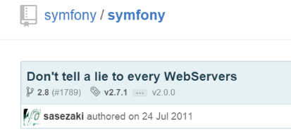
--

<span style="font-size:300%">？</span>
--

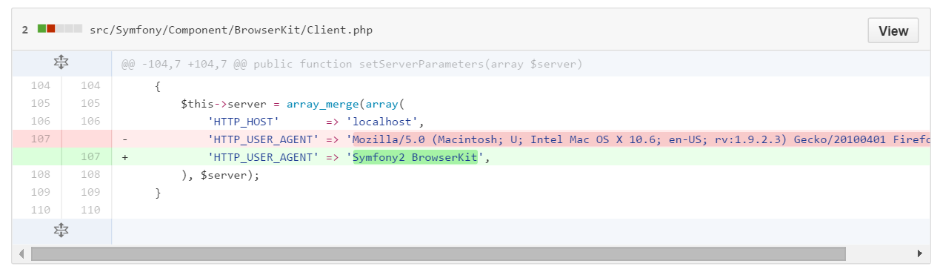
--


---

そ、そうですね。失礼しました。
--

<span style="font-size:200%">HttpFoundation Component</span> <br>について話しをしろってことですよね。
--

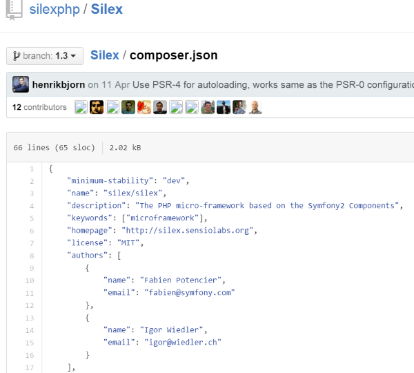<br>
--

<br>
Igor Wiedler<br>
さんはこう言いました
--

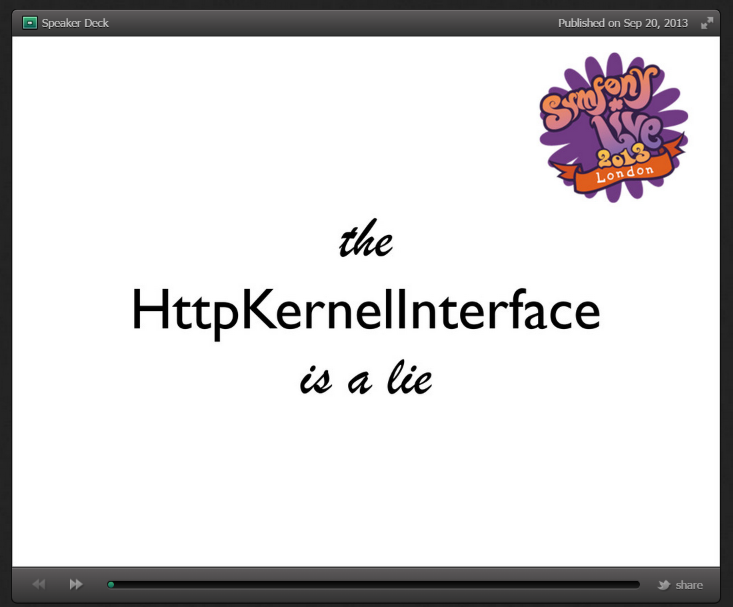
--


---

... 気を取り直しまして
--

19 May 2015
--

# PSR-7
PHP Standard Recommendations の<br> HTTP message interfaces
--

Accepted!
---

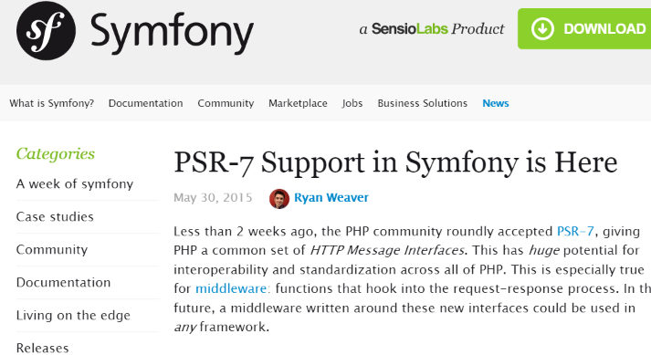
--

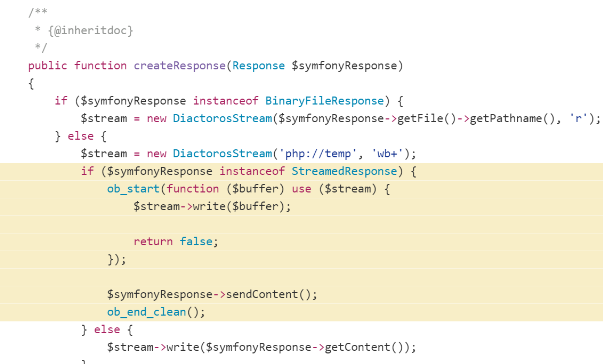
--

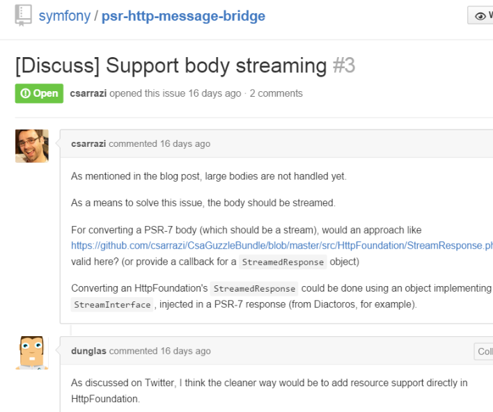
--

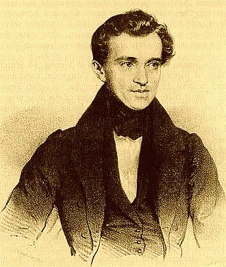<br>
<span style="font-size:50%">ヨハン・シュトラウス1世＜1804-1849＞</span>
<br><br>
シンフォニー君の<s>ラデツキー</s>、<br>
もとい うそつきー
--

・・・
--

<span style="font-size:130%">どうだ</span><br>
<span style="font-size:130%">これが シンフォニー ジョークだ！</span>
---

・・・
---

では、会場があったまったところで本題に入ります。
--

# HTTP/1.0
1996年5月 (RFC 1945)

# HTTP/1.1
1997年1月 (RFC 2068)
--

# PHP 1
1995年6月
--

# PSR-7
2015年5月
--

<span style="font-size:130%">What’s new ?</span>
--

<span style="font-size:330%">さあ？</span>
--

<span style="font-size:130%">... What’s changed PHP itself ?</span>
--

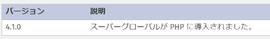<br>
--

他の色々なところはmwopのスライド見てね。

http://slides.mwop.net/2014-12-06-PHP_Speaks_Http/
--

<span style="font-size:130%">... What’s changed on around other language ?</span>
--

これもmwopのスライド見てね。

http://slides.mwop.net/2014-12-06-PHP_Speaks_Http/
--

<span style="font-size:130%">... 「で、結局何が新しいの ?」</span>
--

<span style="font-size:130%">PHPとHTTPについて考えなおしたという点</span>
---

---

<span style="font-size:130%">PSR-7 のポイント</span>
--

 - psr/http-message のインターフェイスのDocCommentが丁寧
 - リクエストターゲット用のURI
 - `UploadedFileInterface` によるアップロードファイル配列の正規化
 - イミュータブル
 - メッセージボディがストリーム

--
特に個人的にはメッセージボディがストリームな点
--

「なぜ？」
--

だって、今までのフレームワークってストリームのことは後回しだったんだよ！
--

Zend Framework 1 <br>
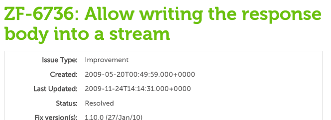
--

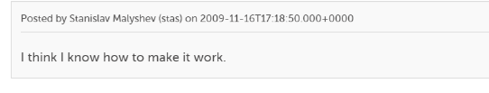
--

ZF 1.10 introduces <br><br>
`Zend_Http_Response_Stream`
--

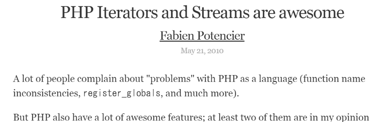
--

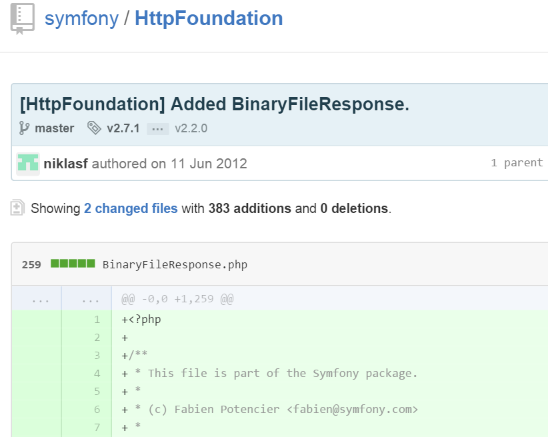
--

つまり
--

今までフレームワーク側であとづけで用意されたレイヤーから、
<strong style="font-size:150%">もとからPHPに備わっていた抽象化レイヤー</strong>に立ち戻ったことになる
---


--

```php
file_get_contents('http://example.com/');
```
--

```php
$stream = fopen('http://example.com/', 'r');
stream_copy_to_stream($stream, fopen('php://output', 'wb'));
```
--

```php
$stream = fopen('php://memory', 'rb+');
fwrite($stream, 'Hello World!');
stream_copy_to_stream($stream, fopen('php://output', 'wb'));
```
--

```php
$stream = fopen('php://memory', 'rb+');
fwrite($stream, 'Hello World!');
echo stream_get_contents($stream);
```
--

```
//hello.html
Hello World!
```

```php
ob_start();
include 'hello.html'
$template_message = ob_get_clean();

echo $template_message;
```
--

OK?
---

・・・
--

付け加えると、フィルターについて考えてみると
--

Symfony&rsquo;s way
--

<strong style="font-size:180%">
Bundle ?<br>
EventDispatcher ?
FilterResponseEvent ?
DependencyInjection ?
</span>
--

PHP&rsquo;s way
--

```
stream_filter_append($stream, "string.toupper");
```
--

・・・まあ、使いどころあんまりないですけど<br>(この例だと)
---

ちなみに
--

ストリームを強制してることで、StreamdResponseでやってるような<br>即echo(バッファリング)な手法がちょっとやりづらい。<br><br>
＜psr-7 否決1票の理由の一つ＞
--

こうすれば良いんじゃね？というのは、以下に<br>
https://gistlog.co/sasezaki/fb703148b0542d61f0bb
---

PSR-7の構成
--

```
├── composer.json
├── LICENSE
├── README.md
└── src
    ├── MessageInterface.php
    ├── RequestInterface.php
    ├── ResponseInterface.php
    ├── ServerRequestInterface.php
    ├── StreamInterface.php
    ├── UploadedFileInterface.php
    └── UriInterface.php
```
--

実装please!
--

- guzzle/psr7
- zendframework/zend-diactoros
- slim (ver3)
- ...
---

<span style="font-size:180%">zend-diactoros</span>
<br>
previously a.k.a. phly/http
--

<span style="font-size:130%">うん、読めない！<span>
--

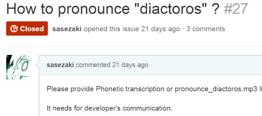
--

<span style="font-size:130%">/dɪʌktɒrɒs/<span>
--

<span style="font-size:140%">ごめん、やっぱ読めない！</span><br><br>
<span style="font-size:90%">次からは、CV:門脇舞以 を要求するようにします。</span>
---

zend-diactoros とは<hr>
`PSR-7 HTTP Message implementation`<br>
... and more

<pre>
EditorであるMatthew Weier O&rsquo;sPhinney(mwop)が、<br>
psr-7がレビュー段階の時に実装として作成していた phly/http <br>
がベースなのでIncoming Requestな(Webアプリな)<br>
コンポーネントとしては今のところもっとも参照されている。
</pre>
--

```
├── AbstractSerializer.php
├── Exception
│   ├── DeprecatedMethodException.php
│   └── ExceptionInterface.php
├── HeaderSecurity.php
├── MessageTrait.php
├── PhpInputStream.php
├── RelativeStream.php
├── Request
│   └── Serializer.php
├── Request.php
├── RequestTrait.php
├── Response
│   ├── EmitterInterface.php
│   ├── SapiEmitter.php
│   └── Serializer.php
├── Response.php
├── Server.php
├── ServerRequest.php
├── ServerRequestFactory.php
├── Stream.php
├── UploadedFile.php
└── Uri.php
```
--

「zend-diactorosはusefulなコンポーネントで、
これからのデファクトスタンダードってこと？」
--


---

まあ、色々<span style="color:#f00;">物足りない</span>ですよね。
--

こんなメソッドとか<br />
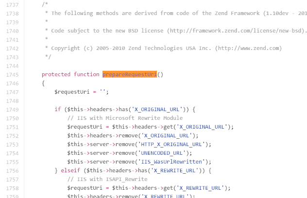
--

<span style="font-size:470%">!</span>
--

<span style="font-size:90%">SymfonyはZend Frameworkを使っていたんだ！</span><br>

--

・・・
--

次、行きます
---

<span style="font-size:250%">Middleware</span>
--

あぁ、なにGuzzleのこと？<br>
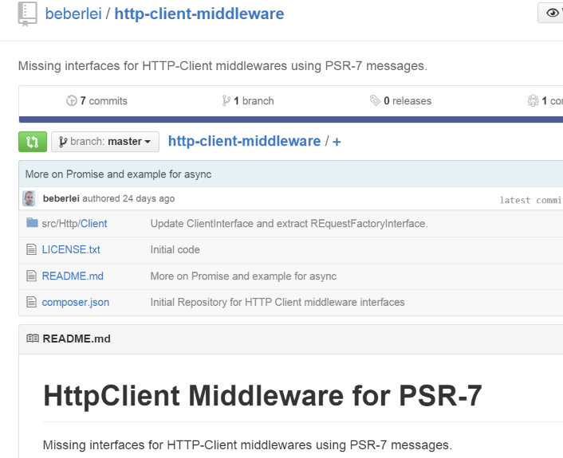
--

...HTPPクライアント方面は<br>いったん置いときます。
--

Rackスタイル
--

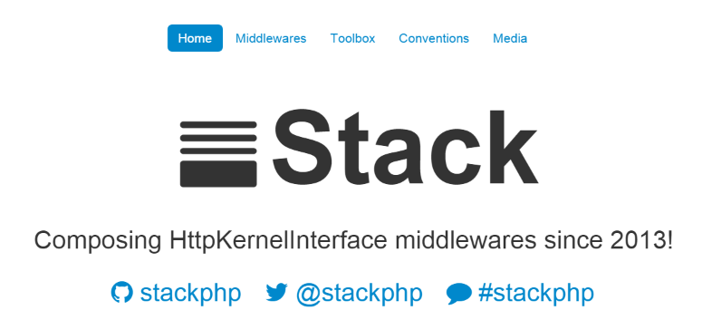
--

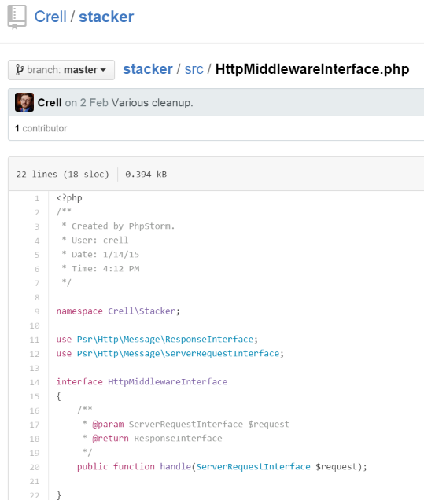<br>
https://github.com/Crell/stacker
--

・・・
---

psr-7 の Middleware ってこっちのほうがよく見かけるSignatureですよね

 - https://mwop.net/blog/2015-01-08-on-http-middleware-and-psr-7.html

 - http://paul-m-jones.com/archives/6142

--

```
<?php
use Psr\Http\Message\ResponseInterface as Response;
use Psr\Http\Message\ServerRequestInterface as Request;

function (
    Request $request,   // the incoming request
    Response $response, // the outgoing response
    callable $next      // the next middleware
) {
    // ...
}
```

<span style="font-size:70%; padding-left:350px;">ref. http://relayphp.com/</span>
--

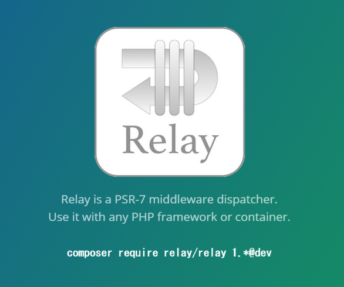
--

Slim 3<br>
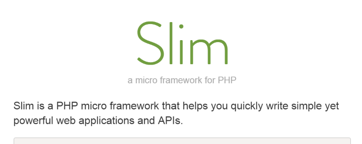<br>
<span style="font-size:70%">@see https://github.com/slimphp/Slim-HttpCache</span>
--

Zend Framework 3(?)<br>
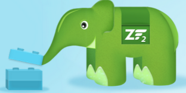
--

`zendframework/zend-stratigility/src`

```
|-- Dispatch.php
|-- ErrorMiddlewareInterface.php
|-- FinalHandler.php
|-- Http
|   |-- Request.php
|   |-- ResponseInterface.php
|   `-- Response.php
|-- MiddlewareInterface.php
|-- MiddlewarePipe.php
|-- Next.php
|-- Route.php
`-- Utils.php

```
--

@see
https://github.com/zendframework/zend-stratigility/blob/master/src/Http/Response.php
---

Middlewareビルダー・ディスパッチャーが乱立してるってことは、つまり...
--

へたすると、次のようになる。<br>
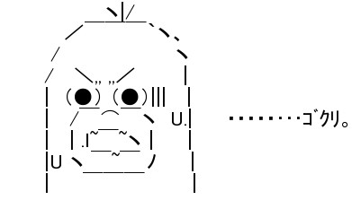
--

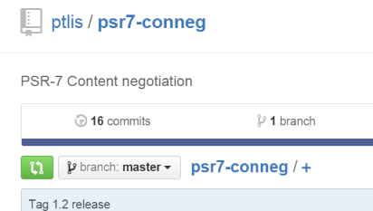

```
src/
|-- Negotiator.php
|-- RelayNegotiator.php　　　　　　←　え？
`-- StratigilityNegotiator.php 　←　え？
```
---

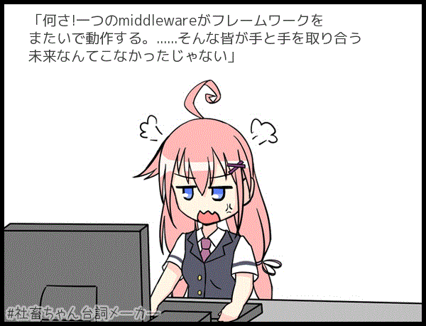
--

<span style="font-size:300%">うそつき！</span>
--


http://psr7.net/ref.html

            </script>
        </sectin>

			</div>

		</div>

		<script src="lib/js/head.min.js"></script>
		<script src="js/reveal.js"></script>

		<script>

			// Full list of configuration options available at:
			// https://github.com/hakimel/reveal.js#configuration
			Reveal.initialize({
				controls: true,
				progress: true,
				history: true,
				center: true,

				transition: 'slide', // none/fade/slide/convex/concave/zoom

				// Optional reveal.js plugins
				dependencies: [
					{ src: 'lib/js/classList.js', condition: function() { return !document.body.classList; } },
					{ src: 'plugin/markdown/marked.js', condition: function() { return !!document.querySelector( '[data-markdown]' ); } },
					{ src: 'plugin/markdown/markdown.js', condition: function() { return !!document.querySelector( '[data-markdown]' ); } },
					{ src: 'plugin/highlight/highlight.js', async: true, condition: function() { return !!document.querySelector( 'pre code' ); }, callback: function() { hljs.initHighlightingOnLoad(); } },
					{ src: 'plugin/zoom-js/zoom.js', async: true },
					{ src: 'plugin/notes/notes.js', async: true }
				]
			});

		</script>

	</body>
</html>
